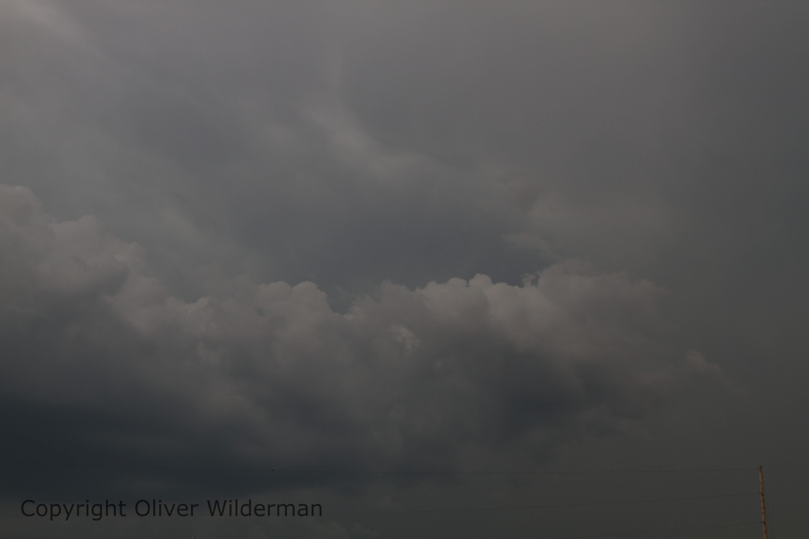
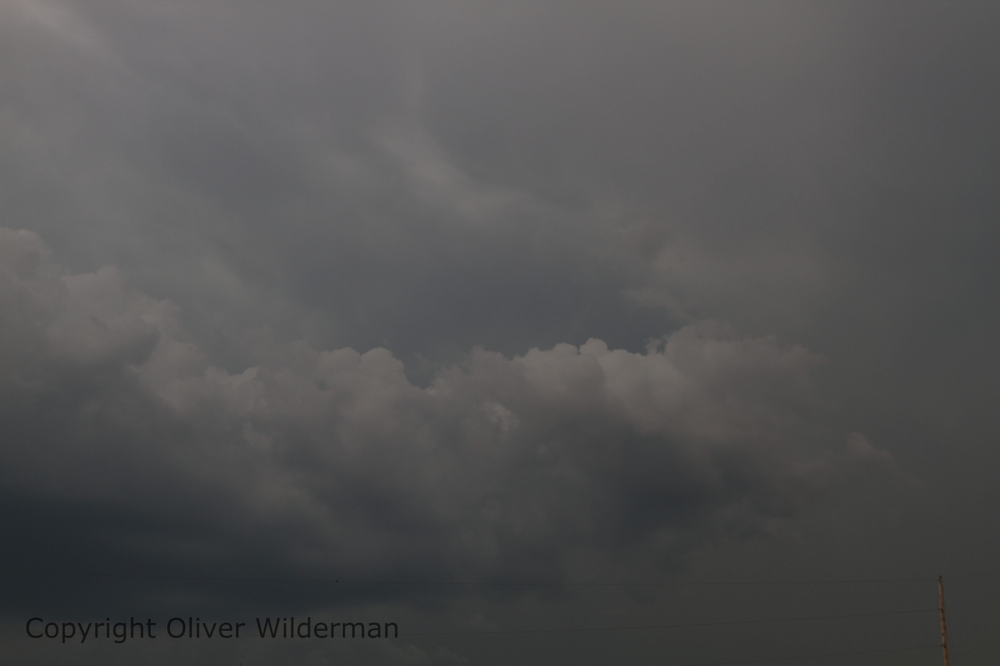

So while I haven't been able to do a lot of storm spotting (or chasing) yet. I still have been doing a lot of work. I take pictures of lightning and storms that come my way and while that doesn't happen a lot where I live I still get quite a few good pictures! For example, here is one I took last year of a sweet lightning strike in the clouds!

I went on my first "chase" it wasn't much. I didn't see any lightning, tornadoes, or hail. So that was kinda lame. I did get some cool pictures of some clouds though!
 
